DJs
From intimate lounge sets to full dancefloor takeovers. Open format, Arabic, and commercial DJs, matched to your crowd and your night.
Singers
A taste of the solo vocalists and duos on our roster, from soul and jazz to pop and cabaret. Tell us your date and vibe and we will match the right voice to your event.

Layla Kardan
Layla Kardan blends Belgian, Iranian and Australian influences into a sound built for big stages, with a string of regional awards behind her including Emirates Woman's Artist of the Year. She has performed at Quincy Jones' own Dubai venue, Q's Bar, and brings that same star power to private events.
Enquire About Layla Kardan
Aislu Zhak
Aislu Zhak is a Kazakhstan born vocalist who moves easily between jazz, soul and pop, pairing emotional depth with a warm stage presence. She also works as a vocal coach, so expect a technically polished performance as well as a passionate one.
Enquire About Aislu Zhak
Alena Radziuk
Alena is a Belarusian powerhouse vocalist who won the UAE's Win the Crowd and reached the finals of TheVocalist UAE. She has performed for royalty in Bahrain and Saudi Arabia and is especially in demand for festive season bookings.
Enquire About Alena Radziuk
Bettina Schweiger
Bettina Schweiger is an award winning opera soprano from Vienna who has captivated audiences across Europe and the Middle East. She brings rare range to any event, moving comfortably between classical performance and vocal consulting work.
Enquire About Bettina Schweiger
Alina Hrokhovska
Alina has been performing since 2014 across Ukraine, the UAE and Egypt, equally comfortable solo, in a duo or fronting a cover band. Her warm, engaging stage presence keeps guests entertained at everything from five star hotels to beach parties.
Enquire About Alina Hrokhovska
Claudia Lang Lenton
Claudia is a classically trained vocalist from Spain who sings fluently in English, Spanish and French. Her repertoire runs from jazz standards to modern ballads, delivered with a voice she herself describes as sweet yet powerful.
Enquire About Claudia Lang Lenton
Claudia Patrice
Claudia Patrice is a Dubai based singer, songwriter and producer known for soulful, honest music built around real storytelling. She writes and produces her own material, giving every performance a personal, original edge.
Enquire About Claudia Patrice
Ella Lefterova
Ella Lefterova fronts a flexible lineup, performing as a duo, trio or full four piece band across jazz, pop, soul and lounge. Her multilingual repertoire gives her a genuinely global sound, built for UAE audiences of every background.
Enquire About Ella Lefterova
Elnura
Elnura Abdykasymova is a UAE based vocalist known for a powerful voice and magnetic stage presence across Dubai and Abu Dhabi. Whether on a big stage or in an intimate setting, she brings energy and elegance to every set.
Enquire About Elnura
Courtney Gaw
Courtney Gaw is a Dubai based singer and actress whose performances draw equally on vocal power and dramatic storytelling. Her background on stage and screen gives her sets a theatrical, character driven edge.
Enquire About Courtney Gaw
Alisha Vickers
Alisha Vickers is a Dubai based singer songwriter with a background in marketing, which shows in how sharply her shows are put together. Expect smooth, expressive vocals paired with lyrics that feel personal and purposeful.
Enquire About Alisha Vickers
Alen Hit
Alen Hit, also known as Aleh Shchutski, built his name on European talent shows including The Voice and X Factor, plus a national final at Eurovision 2018. His powerful voice and striking stage presence have earned him fans across Europe and the Middle East.
Enquire About Alen Hit
Allexa Bash
Allexa blends the drama of Kate Bush with the emotional weight of Adele, a style she brought to her debut album Dark Angels. Classically trained since childhood, she performs across pop, rock and jazz and has earned radio play from Beirut to Paris.
Enquire About Allexa Bash
Anelly
Anelly is a Ukrainian born, UAE based singer with a theatrical vocal background from Kyiv's Circus and Variety Arts academy. Over 12 years she has performed across six countries and sings fluently in four languages.
Enquire About Anelly
Anna Yeli
Anna Yeli is a Ukrainian singer based in Dubai whose sound blends the depth of jazz with the smoothness of lounge and the energy of pop. Her international performances have built her a loyal following well beyond the UAE.
Enquire About Anna Yeli
Aston Wylie
Aston Wylie is a South African multi instrumentalist who gained wide recognition as a contestant on The Voice SA. His looping techniques turn classic and contemporary hits into something distinctly his own live.
Enquire About Aston Wylie
Bibi Luna
Bibi Luna is an Italian vocalist whose soulful, elegant sets suit upscale events from private soirees to international galas. Her style blends old world charm with a contemporary touch that keeps audiences fully engaged.
Enquire About Bibi Luna
Charley Ryan
Charley Ryan brings an Irish rock and roll spirit to Dubai's stages as lead singer of Warehouse11 and a founding member of Heart Strings. Her raw vocals and magnetic energy work equally well in a packed venue or a stripped back acoustic set.
Enquire About Charley Ryan
Dan Moores
Dan Moores is a Dubai based guitarist and vocalist known for blending acoustic playing with live looping to build a full, layered sound solo. He has held residencies at some of the city's top venues including Emirates Palace and Jumeirah Beach Hotel.
Enquire About Dan Moores
DeniZa
DeniZa is a touring vocalist, producer and choreographer whose shows fuse music, movement and storytelling, honed across five years of performing in Asia. Her vocal range stretches from jazz to rock, and she commands a stage with real confidence.
Enquire About DeniZa
Dermott Taggart
Dermott Taggart is an Irish singer songwriter bringing warm, acoustic driven sets to stages across Dubai and Abu Dhabi. He moves easily between original songs and reimagined classics, always grounded in honest storytelling.
Enquire About Dermott Taggart
Diana Torres
Diana Torres sings in English, Spanish and Italian, giving her sets genuine multicultural reach for weddings and corporate events across the UAE. Her warm stage presence and emotional delivery suit everything from intimate gatherings to grand celebrations.
Enquire About Diana Torres
Diana Petrovska
Diana Petrovska is a cabaret and show performer from Odesa whose range spans soulful ballads to high energy cabaret numbers. She has performed across the UAE, Georgia, Turkey and Ukraine, building a reputation for versatility.
Enquire About Diana Petrovska
Emily Bourn
Emily Bourn is a British singer songwriter based in Dubai whose original music carries Celtic tones and bittersweet, story driven lyrics. She performs both solo and with a cover band, giving clients real flexibility in format.
Enquire About Emily Bourn
Evgenia
Evgenia is a Dubai based vocalist whose set list moves fluidly between pop, jazz, lounge and rock depending on the room. She performs solo or with a full band, tailoring the mood from corporate gatherings to upscale lounge nights.
Enquire About Evgenia
Florentina Tuchel
Florentina Tuchel is a Dubai based singer who performs both as a solo artist and fronting her own band. Her sets blend soulful ballads with upbeat hits for an energetic, crowd pleasing experience.
Enquire About Florentina Tuchel
Idorka
Idorka is a Dubai based vocalist with a soulful tone and dynamic range suited to luxury events and private parties alike. Her repertoire spans pop, soul, jazz and contemporary hits, solo or alongside a live band.
Enquire About Idorka
Irina Shepova
Irina Shepova has been performing professionally since 2013 across an unusually wide range, from jazz and soul to Latin, country and disco. She has worked in bands, duos and trios before building a strong solo career in Dubai.
Enquire About Irina Shepova
Irina T
Irina is a Belarusian singer based in Dubai performing solo, as a duo or trio across pop, soul, jazz, lounge and dance. Her main repertoire is in English, with sets also available in French, Italian, Spanish and Russian.
Enquire About Irina T
Itzel
Itzel is a Dubai based singer songwriter whose sound blends pop, soul, R&B and acoustic textures. She writes original material as well as reimagined covers, bringing a storyteller's instinct to every performance.
Enquire About Itzel
Joel Rothwell
Joel Rothwell splits his time between the UK and UAE as a singer, guitarist and DJ performing under the name Hudson. He can deliver an acoustic set, a full band performance or a high energy DJ set, often within the same event.
Enquire About Joel Rothwell
Julia Choo
Julia Choo is a Dubai based vocalist known for a polished, elegant stage presence suited to luxury events and private functions. Her wide ranging repertoire moves from soulful ballads to upbeat hits depending on the mood of the room.
Enquire About Julia Choo
Kate Meteora
Kate Meteora, also known as KT, built her following through heartfelt lyrics and mesmerizing melodies performed across Dubai's music scene. Her multicultural influences give her sound a fresh, distinctive edge.
Enquire About Kate Meteora
Katarina Gerlova
Katarina Gerlova is a Dubai based singer and violinist who blends vocal and instrumental performance in one act. Her versatility suits everything from private celebrations to corporate functions.
Enquire About Katarina Gerlova
Kati Muse
Miss Kati draws on soul, R&B, hip hop, jazz, funk and downtempo influences from artists like Amy Winehouse and Erykah Badu. Her mature, expressive voice is built for emotionally rich, intimate performances.
Enquire About Kati Muse
Kristina Gutseva
Kristina Gutseva is an award winning Belarusian singer based in Dubai known for a powerful voice and strong stage presence. Her performances span a wide range of genres, always marked by real emotional depth.
Enquire About Kristina Gutseva
Kristina Skiba
Kristina Skiba performs across jazz, pop, cabaret, Latin, swing, disco and blues, often reworking world hits into her own arrangements. She also writes her own songs and works as a vocal teacher and actress in Dubai's theatre scene.
Enquire About Kristina Skiba
Kristine Martiashvili
Kristine Martiashvili is a Dubai based singer songwriter whose emotive voice and heartfelt lyrics anchor every set. Her live shows move across soul, pop, acoustic and contemporary sounds.
Enquire About Kristine Martiashvili
Raena Lashae
Raena Lashae is a British vocalist based in Dubai with a smooth, rich blend of soul, jazz and funk. She performs at luxury venues, private events and festivals with a warm, effortlessly cool sound.
Enquire About Raena Lashae
La Rudche
Known as the Demon Queen of Dubai, La Rudche fuses dark pop, soul, rock and performance art into a genre defying live show. Expect raw emotion, theatrical flair and a commanding stage presence.
Enquire About La Rudche
Laura Arias
Laura brings Latin, pop and jazz together into vibrant, high energy sets suited to everything from intimate restaurants to yacht parties. Her warm stage presence makes her a natural at engaging a crowd of any size.
Enquire About Laura Arias
Lauren Townley
Lauren Claire Townley is a heartfelt country singer songwriter whose music blends classic country charm with a modern twist. Her storytelling style turns personal moments into songs that resonate well beyond the stage.
Enquire About Lauren Townley
Lexie
Lexie is a UK signed recording artist with releases through Warner Music and Universal and a sound she describes as pop with a touch of soul and country. She has performed over 300 shows worldwide, including sets at Dubai Opera and Coca Cola Arena.
Enquire About Lexie
Lia
Lia is a singer songwriter with 20 years in the industry, equally at home across pop, dance, lounge and jazz. She has collaborated widely with musicians, orchestras and dancers, bringing that range to every live set.
Enquire About Lia
Lisi Valdés
Lisi Valdés is a Dubai based singer songwriter whose repertoire spans salsa, bossa nova, bachata, pop and jazz, performed in Spanish, English and Portuguese. Her reliable, interactive style has made her a regular at venues including Expo 2020 and aboard MSC Cruises.
Enquire About Lisi Valdés
Massiel Sarraff
Massiel Sarraff Collazo is a Spanish Cuban vocalist, saxophonist and trumpet player whose sets span classic jazz, R&B, rock and Latin music. She sings in five languages, giving her a genuinely global reach on stage.
Enquire About Massiel Sarraff
Nadin
Nadin is a Ukrainian artist based in Dubai performing solo, as a duo or as part of the high energy Redline Band. Beyond singing she also works as a voiceover artist, actress and model, bringing a polished, multi disciplinary presence to every set.
Enquire About Nadin
Natalia
Natalia is a Belarusian singer and trained pianist with 11 years of experience across upbeat pop, lounge, rock, jazz and Latin sets, plus decades of classic hits. She performs solo, in duos and trios, fronting a live band or leading dinner shows with dancers.
Enquire About Natalia
Nataly
Nataly has been performing across the Emirates since 2012, fluent in multiple languages and comfortable blending genres for any room. She has played five star hotels, weddings, exhibitions and corporate events worldwide.
Enquire About Nataly
Nathaniel Lewis
Nathaniel Lewis is a singer songwriter whose soulful vocals and heartfelt lyrics sit across genre lines. Beyond the stage he is also an entrepreneur, bringing a sharp, business minded approach to every project.
Enquire About Nathaniel Lewis
Nonna
Nonna Askerova is a Dubai based jazz and pop vocalist known for rich tone and refined technique as a soloist with a jazz Big Band. She also teaches voice, bringing a technically grounded polish to every performance.
Enquire About Nonna
Polina Qz
Polina Qz trained in Jazz Vocal at St Petersburg University of Culture and has performed everywhere from the Byblos Festival in Lebanon to Dubai Opera House. A former contestant on The Voice Russia and X Factor Ukraine, she moves comfortably between jazz, opera and pop.
Enquire About Polina Qz
Polina Sandan
Polina Sandan is a Dubai based singer and pianist crowned Best Singer of the UAE in 2020, performing in French, English, Italian, Russian and Chinese. Her refined, multilingual sets suit luxury events and cultural showcases alike.
Enquire About Polina Sandan
Sara Tarabulsi
Sara Tarabulsi is a Dubai based vocalist whose expressive voice and elegant style suit luxury events and live venues. Her sets range from soulful ballads to pop hits and acoustic classics.
Enquire About Sara Tarabulsi
Shanice Michaels
Shanice Michaels has performed across Dubai, Hong Kong, New York and Las Vegas, moving through Motown, jazz, R&B, reggae and contemporary sets. Before the UAE she was first runner up on the TV show Born Diva in the Philippines.
Enquire About Shanice Michaels
Sophie Magali
Sophie Magali is a Dubai based singer songwriter with German and Slovenian roots whose soft, dreamy voice suits an upbeat, modern pop and R&B sound. Her newer material explores the early excitement of romance alongside themes of self love.
Enquire About Sophie Magali
Solé Basaldua
Solé Basaldua is an Argentine singer, songwriter and dancer who spent years refining her craft across London, Los Angeles and Miami. She has collaborated with Pitbull and signed to Universal, and has performed everywhere from the iHeartRadio Music Awards to Wembley Stadium.
Enquire About Solé Basaldua
Toi Dupras
Toi Dupras is a Dubai based singer, show creator and dancer who blends music and movement into one unified performance. Her creative, high energy shows make her a standout for events looking for something visually driven.
Enquire About Toi Dupras
TSaint
TSaint is a rising Dubai based performer blending R&B, pop and hip hop into smooth, personal, catchy sets. His music captures everyday stories of love and self discovery with a modern, global sound.
Enquire About TSaint
Vahimiti
Born in Italy with Tahitian roots, Vahimiti writes songs that blend soulful melodies with influences from across her multicultural background. Her intimate, warm performances turn every set into a meeting point of cultures.
Enquire About Vahimiti
Tina Paravian
Tina Paravian is a Kyiv born, Dubai and London based singer and TV presenter with a commanding, versatile vocal style. Her performances are vibrant and emotional, backed by a natural ease in front of a camera as well as a crowd.
Enquire About Tina Paravian
Toria Kant
Toria is a Dubai based singer blending pop, R&B and soul into a sound that has earned her a reputation as one of the city's rising talents. Her strong stage presence and emotive delivery work well live or in the studio.
Enquire About Toria Kant
Victoria Newman
Victoria Newman is a soul and R&B artist with over 15 years of experience as a solo performer and in bands. Her voice blends sultry smoothness with powerful highs, shaped by formal music college training.
Enquire About Victoria Newman
Sergio Catalan
Sergio Catalan is a Chilean guitarist and vocalist whose sound draws on bossa nova, flamenco and Latin American music alongside romantic ballads and jazz. Based in the UAE since 2008, he has performed at Dubai Opera, Expo 2020 and venues including Burj Al Arab and Four Seasons.
Enquire About Sergio Catalan
Jay Bellamy
Jay Bellamy is a UK singer and guitarist now based in Dubai, known for smooth vocals and a laid back, soulful charm. His repertoire spans acoustic classics, pop, rock and indie, suited to both chilled and high energy events.
Enquire About Jay Bellamy
Hamdan Al Abri
Hamdan Al Abri is an Emirati singer songwriter and frontman of Dubai based soul band ABRI, known for albums Sunchild and Blank Notes. ABRI has toured extensively and shared stages with artists including Erykah Badu and Ziggy Marley.
Enquire About Hamdan Al Abri
Arianna Bianchi
Arianna Bianchi has been performing since childhood, moving from Italian television at age six to a decade long residency at Rome's Harry's Bar. Now based across the Middle East, she performs solo and with her own jazz trio.
Enquire About Arianna Bianchi
Ryan Gibb
Ryan Gibb is a pianist, vocalist and actor with West End credits and a repertoire spanning every genre. He has shared the stage with Andrew Lloyd Webber, Sir Tom Jones and Will.I.Am before relocating to Dubai in 2022.
Enquire About Ryan Gibb
Andrea Florez
Andrea Florez brings a strong stage presence and wide vocal range built across performances in New York, Miami, Paris and beyond. Her technical background in recording and arranging makes her a dependable, detail focused performer.
Enquire About Andrea Florez
Arqam Al Abri
Arqam is an Emirati soul singer who left a corporate career to pursue music rooted in positivity and purpose. His sound blends old school soul with neo soul beats, available on major streaming platforms.
Enquire About Arqam Al Abri
Eirini
Eirini is a UK based R&B artist of Greek Cypriot and British Irish heritage who trained at Stella Mann College before building a following in Dubai. She has performed at The Royal Albert Hall and major UAE venues, and released her debut single in 2022.
Enquire About Eirini
Lyndrik Xela
Lyndrik Xela brings an energy reminiscent of Michael Jackson and Prince, built over a decade performing on London's West End including a lead role in Thriller the musical. His range and charisma make him a genuinely original presence on stage.
Enquire About Lyndrik Xela
Lina Ammor
Lina Ammor is a German born, Dubai based RnB and soul singer who won Netflix's Sing On Germany and has appeared on The Voice of Germany. She has performed at Dubai Expo 2020 and the Forbes Middle East Healthcare Summit among other major events.
Enquire About Lina Ammor
Jaymie Deville
Jaymie Deville is an Australian singer now based in Dubai, known for atmospheric, emotionally intimate R&B. He is also an accomplished producer and songwriter, with his original music streamed over 4.5 million times.
Enquire About Jaymie Deville
Ayesha Reid
Ayesha Reid is a Dubai based singer songwriter whose soulful vocals draw on R&B, soul and jazz influences. Her heartfelt lyrics and emotive delivery have made her a rising name in the local scene.
Enquire About Ayesha Reid
Chinua Hawk
Chinua Hawk is an award winning singer from New Jersey rooted in American soul and gospel traditions, who has sung backing vocals for Celine Dion and recorded with Kanye West. His performances span North America, the Middle East, Africa and beyond.
Enquire About Chinua Hawk
Julia Sydorenko
Julia Sydorenko is a Ukrainian singer based in the UAE for the past seven years, trained in jazz and pop vocals in Poland. Her repertoire spans jazz, soul, pop and dance, performed at venues including Waldorf Astoria and Four Seasons Jumeirah.
Enquire About Julia Sydorenko
Bruno Fave
Bruno Fave is a Dubai based producer, vocalist and content creator known for electro soul and contemporary R&B releases including Save The Day and Run. He performs live with guitar, loop station and drum machine at events from Fashion Forward to Formula 1 Yas Marina.
Enquire About Bruno Fave
Sam Tring
Sam Tring is a South London born singer songwriter with a soul pop sound shaped by jazz influences like Esperanza Spalding and Gretchen Parlato. Her rich vocal tones and jazzy melodic choices give every set a distinct, exploratory edge.
Enquire About Sam Tring
Sean Lipsey
Sean Lipsey is a US born, Dubai based vocalist whose soulful R&B style is rooted in his church music background. Beyond singing, he is also a multi instrumentalist, producer and entrepreneur.
Enquire About Sean Lipsey
Anastasia Marushova
Performing as MARUSHOVA, Anastasia brings an experimental, original sound shaped by competition finals including SerebroKasting and national TV appearances in Russia. Her original music is available on Spotify and Apple Music under the same stage name.
Enquire About Anastasia Marushova
Diane
Diane is an Irish born singer with a 25 year career spanning West End tours and major international events, including performances at the FIFA World Cup 2022 fan zone in Qatar. As a Dubai resident she has also performed for Sheikh Mohammed Bin Rashid and royal guests at the Endurance World Cup.
Enquire About Diane
Anna
Anna is an Odessa born singer with 12 years of international experience across pop, R&B, rock, Latin and jazz, performing in duos, trios and larger bands. She has worked in five star hotels worldwide and fronted Dubai party band Rhythm Nation.
Enquire About Anna
Mary Louise
Mary Louise is an Irish singer, model and actress known for a versatile voice and a striking stage presence at Dubai's top venues. Her shows combine music and style into one polished package.
Enquire About Mary Louise
Winck
Discovered on The Voice Brasil, Luiza Winck is a Brazilian pop singer blending funk and Latin influences into high energy, sold out shows at Souk Madinat Jumeirah. Her sets often feature outfit changes and dancers for a full production experience.
Enquire About Winck
Maria
Maria is a resident singer at Palazzo Versace Hotel who has performed for UAE government and royal family events and shared stages with Amr Diab and Tamer Hosni. She sings in six languages across nine years of performing in the UAE.
Enquire About Maria
Anyuta
Anna is a Ukrainian singer skilled in pop, jazz, lounge and blues, equally comfortable in duos, trios or full bands and incorporating choreography into her shows. Her international career spans South Korea, China and a range of Dubai's top venues.
Enquire About Anyuta
Nati
Nati is an internationally touring singer educated at Kyiv's top music institutions, with wins at international vocal competitions behind her. She performs regularly across Germany, the Maldives, Kazakhstan and beyond, including a Dubai residency with Nuart Entertainment.
Enquire About Nati
Clare Sophia
Clare is a British soul, jazz and R&B vocalist who has toured internationally as a backing vocalist for Stormzy, Rita Ora and Kylie Minogue. Now based in Dubai, she performs for clients including Van Cleef & Arpels and Waldorf Astoria.
Enquire About Clare Sophia
Alina
Alina is a Ukrainian singer songwriter and semi finalist on The Voice of Ukraine, formerly lead soloist of the National Academic Symphonic Band of Ukraine. Her style moves between sincere, soulful ballads and stylish, high energy sets.
Enquire About Alina
Jade Kimberley
Jade Kimberley is an international triple threat performer whose 15 year career spans singing, dancing, hosting and even fire performance. Her vocals move fluidly from jazz to rock, pop to musical theatre.
Enquire About Jade Kimberley
Aleksandra
Aleksandra Krstic is a Dubai based pianist, singer and composer with a Master's in classical music, blending jazz, funk and soul with electronic textures. She performs solo, leads her own band and has composed film scores for award winning shorts.
Enquire About Aleksandra
Luba
Luba is a jazz trained vocalist from Kyiv National University of Culture and Arts with performances across Ukraine, China, Cyprus and Dubai. She has also appeared in musicals including Cats and Chicago, and directs shows in Dubai.
Enquire About Luba
Ingrid
Ingrid is a Lebanese singer trained in opera and contemporary styles at Berklee College of Music, performing across Lebanon, Turkey, Bahrain and the UAE. She released her debut single in 2021 and also works as a vocal coach.
Enquire About Ingrid
July Nazarenko
July Nazarenko is a Belarusian born singer with 15 years of experience across pop, rock, blues, jazz, funk and soul. She leads several project lineups and carries a playlist of over 350 songs spanning decades.
Enquire About July Nazarenko
Carla
Carla Mannino is an Italian jazz and bossa nova vocalist with a degree in Music Therapy and a soulful, refined sound. Since relocating to the UAE in 2022 she has performed at Expo 2020 and Emirates Palace, often incorporating roller skating into her shows.
Enquire About Carla
Alina Postrova
Alina Postrova is a Kazakhstan born singer with 10 years of experience across pop, jazz, rock, blues and hip hop. She also collaborates with DJs and writes and releases her own techno house and pop tracks.
Enquire About Alina Postrova
Angel
Angeliki Angel Karatsami began classical piano training at age six and later studied opera at the Athens Conservatory. Discovered by Greek pop group The Charms, she built her career from there into a full performing act.
Enquire About Angel
Lisa Goldin
Lisa Goldin is a songwriter and performer whose work has aired internationally on radio and TV, including a number one single on Heart FM. She has shared stages with Ed Sheeran and Jessie J and holds a Dubai Golden Visa for her contribution to the arts.
Enquire About Lisa Goldin
Dario Femino
Dario is an Italian pop singer with a touch of opera style, performing across Italy, the UAE, Bahrain and Greece. He is available solo or in duo format with a singer or musician for weddings, parties and yacht events.
Enquire About Dario Femino
Eleonora Barbacini
Eleonora Barbacini is an Italian singer from Verona now based in Dubai, with a background in musical theatre including We Will Rock You and Peter Pan. She has appeared on X Factor and now performs regularly at venues including Armani and Cove Beach.
Enquire About Eleonora Barbacini
Yvonne Park
Yvonne Park, performing as Vonné, trained at The Academy of Contemporary Music in London and brings a soulful, wide ranging voice to every set. She performs with a flexible three or four piece band for a dynamic live sound.
Enquire About Yvonne Park
Laura Vargas
Laura Vargas is a Portuguese born, Dubai based singer with Brazilian roots blending soul, R&B, pop, jazz and samba. Formally jazz trained, she has performed on The Voice Portugal and judged the competition show All Together Now.
Enquire About Laura Vargas
Kerrie Sterling
Kerrie Sterling is a singer, saxophonist and artist manager with over 15 years in the industry and a music degree from Edinburgh Napier University. She has performed at Dubai Expo 2020 and the Abu Dhabi Grand Prix, and founded her own entertainment company, FlatCap Productions.
Enquire About Kerrie Sterling
Mary Nademo
Mary Nademo is a Dubai based singer and former contestant on The Voice of Ukraine with over 10 years of experience. She performs solo or with her own three to four piece band across pop, jazz, soul and R&B.
Enquire About Mary Nademo
Iva Georgieva
IVA is a Dubai based soul, jazz, pop and dance vocalist who has performed at Atlantis The Royal, Burj Al Arab and Bulgari Yacht Club. A finalist on The Voice of Bulgaria, she was selected by Grammy winning band Clean Bandit to record an official Bulgarian version of their song Mama.
Enquire About Iva Georgieva
Inga
Inga Mar is an Armenian Polish singer and performer fluent in four languages, blending music and dance into one connected act. She has competed on The Voice of Armenia and The Voice of Poland and built a strong following across social media.
Enquire About Inga
Luna
Luna, born Claudia Castells, is a Cuban singer based in Dubai whose versatile voice spans jazz, soul and pop. Her international performances across China, Vietnam, Egypt and Oman bring a genuinely global energy to every set.
Enquire About Luna
Roxanne Duo
Roxane is a French Lebanese vocalist whose sultry, powerful voice moves through R&B, soul, pop, disco and jazz. Now a Dubai resident, she performs regularly at venues including Bagatelle, The Nice Guy and ONZE Dubai.
Enquire About Roxanne DuoBands
Full live bands from our roster, from jazz trios to high-energy party bands, built around your event's sound. A taste of who is available, not the full list, tell us your date and vibe and we will match the right act.
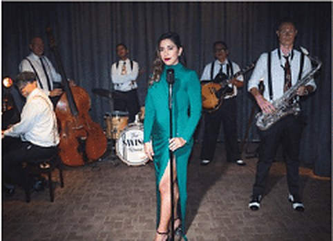
The Swing Revue
Six-piece swing outfit built around the sound of the 1920s to the 1950s, horns, harmonies and all. Weekly residents at Jazz@PizzaExpress JLT, with a Time Out Nightlife Award nomination behind them.
Enquire About The Swing Revue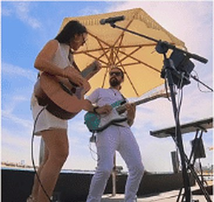
The Sonix
Flexible lineup running from an acoustic duo up to a seven-piece band, covering five decades of hits from the 50s through today's top 40. Built for restaurants, bars and large-scale functions alike.
Enquire About The SonixGorgeous George
A full-throttle live act that moves between rock, indie, funk and pop within a single set. Known for packing dance floors at Dubai bars, private parties and festival stages.
Enquire About Gorgeous GeorgeThe Bossa Project
A vocal-led quartet blending Brazilian rhythm with English lyrics, inspired by Rio de Janeiro as much as Ibiza sunsets. Their percussionist carries a Latin Grammy to the stage.
Enquire About The Bossa ProjectThe Seen
A Pakistani band weaving Sufi, pop, rock and fusion together, with modern Bollywood flair running through classic Eastern melodies. Built for both intimate cultural evenings and large celebrations.
Enquire About The SeenThe Nomads
High-energy pop and rock covers with a feel-good, borderless approach to genre. A band built to keep a dance floor moving from the first song.
Enquire About The NomadsNutella Riot
A pop-jazz duo pairing singer-songwriter vocals with virtuoso guitar, part funk, part swing. Their jazzy covers of English and French favourites have travelled from Glastonbury to the Cologne Philharmonic.
Enquire About Nutella RiotLND Romantic
An electrifying trio built for club residencies and late-night sets, blending house, progressive and dancefloor-ready beats. Suited to private events that want a DJ-band hybrid energy.
Enquire About LND RomanticNoon Band
An instrumental trio fronting the oud over electric bass and drums, framed by jazz improvisation. They call their sound 'experimental Oriental,' equal parts funk groove and Middle Eastern melody.
Enquire About Noon Band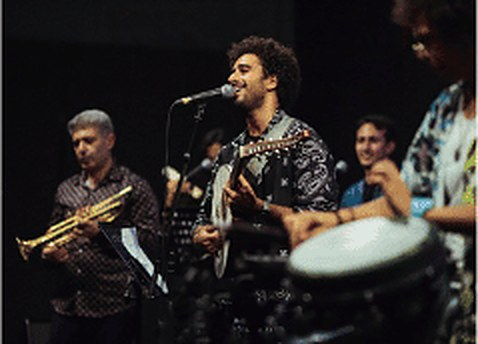
Hosny Fusion Trio
Oud, piano and percussion rooted in traditional Arabic melody, played with a contemporary touch. A tight, interplay-driven trio built for events that want an authentic regional sound.
Enquire About Hosny Fusion TrioGolden Collective
A full party band with horns, rhythm section and a charismatic lead vocalist, built from musicians across Europe, the Americas and the UAE. Equally at home playing jazz through dinner or soul and disco on the dance floor.
Enquire About Golden CollectiveNuvo Soul
A jazz, soul and funk trio drawing on Ella Fitzgerald and Frank Sinatra as much as Amy Winehouse and Bruno Mars. Twice shortlisted for Best Live Band at Time Out Dubai's Nightlife Awards.
Enquire About Nuvo SoulThe Moxies
An all-female vocal harmony trio built entirely around the sound of the 1920s, tight three-part harmonies, vintage choreography and all. A favourite for events chasing a roaring twenties theme.
Enquire About The MoxiesThe Youngers
An acoustic trio that performs in English, Spanish, Portuguese, Italian and Arabic, known for leaving the stage to perform among guests. Built for weddings, theme nights and business events alike.
Enquire About The Youngers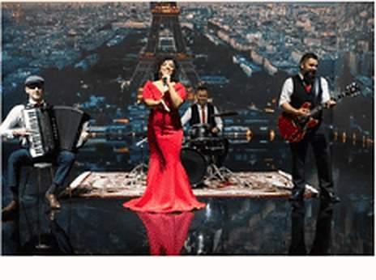
Lady J
A jazz-leaning duo built around Motown-inspired originals and live drum and guitar loops, performing together since 2006 across Asia and the GCC. Over 2,700 shows and counting.
Enquire About Lady J4TheMusic
An award-winning South African band that took home Best Band of 2023 and a Best World Beat win in Los Angeles. Sixteen years of experience energising weeknights and weekends across Dubai.
Enquire About 4TheMusicSalt & Pepper Duo
Vocals and piano covering pop, dance, R&B, jazz, classical and ballads, with a polished, professional approach built from years in the industry. A reliable, repertoire-deep duo for any room.
Enquire About Salt & Pepper DuoIrina Band
A solo, duo or trio setup spanning pop, soul, jazz, lounge and dance music, performed in English, French, Italian, Spanish and Russian. Built to flex to whatever the event calls for.
Enquire About Irina Band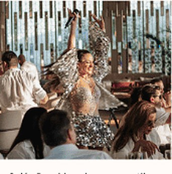
Vibe De Sol
A singer, songwriter and dancer whose career has run through London, Los Angeles and Miami, with studio credits alongside major international names. Pop built for a stage that wants a genuine performer, not just a vocalist.
Enquire About Vibe De SolDe Cruz Band
A West African ensemble spanning jazz, Motown, soul, reggae and Afrobeat, with a stage history alongside major touring artists. Scales from a tight trio to a full ensemble show.
Enquire About De Cruz BandThe Boxtones
A Scottish and Canadian rock-pop band with a Celtic edge, signed to Universal Music MENA, with a touring history that includes stages shared with major international acts. Built for a bigger, festival-leaning sound.
Enquire About The BoxtonesAbout Last Night
A stadium-style show band built around curated mash-ups and a full multimedia light and video production. For events that want the volume and spectacle turned all the way up.
Enquire About About Last Night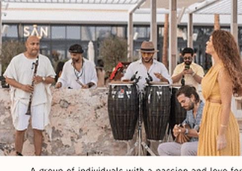
Nomades The Band
Strings, oud, percussion, electronic keys and wind instruments woven into one eclectic, borderless sound. Built to move a room between dancing and stillness within the same set.
Enquire About Nomades The Band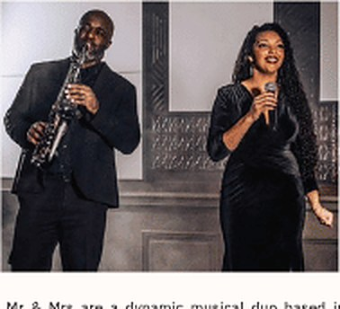
Mr and Mrs Duo
A married duo pairing saxophone with soulful vocals, drawing on jazz ballads, classic pop and the golden era of disco. An intimate, polished sound built from years performing together.
Enquire About Mr and Mrs DuoDanny & Krystle Duo
A married duo blending soulful vocals with acoustic guitar, performing together across intimate venues and larger stages alike. A warm, connected sound built on years of musical partnership.
Enquire About Danny & Krystle Duo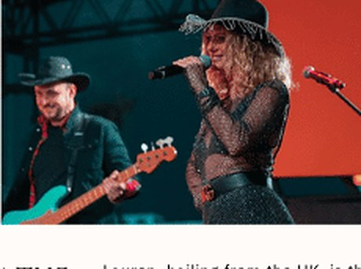
The Girl From The North Country
A soulful duo led by a UK vocalist, moving between heartfelt ballads and upbeat anthems within the same set. Built for a room that wants both quiet moments and energy.
Enquire About The Girl From The North CountryThe Ark Angels
A four-piece all-female band fusing pop and rock into a lively, feel-good set. Regulars across Dubai's biggest venues, built for a crowd that wants to sing along.
Enquire About The Ark Angels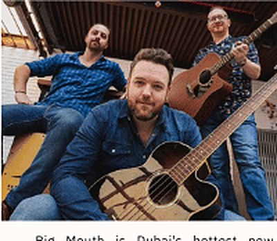
Big Mouth
A power trio built around sharp guitar work and a tight rhythm section, playing timeless classics with real musicianship behind the fun. Built for a night that keeps the dance floor full.
Enquire About Big MouthCarla Duo
An Italian jazz and bossa nova vocalist with formal music therapy training, bringing warmth and emotional depth to every set. Known for weaving roller-skating into her stage presence.
Enquire About Carla DuoJose Jazz Trio
A pianist, trombonist and composer blending Latin-Arabic fusion with classical and Afro-Cuban influence. Built for a set that moves past straight jazz standards into something more layered.
Enquire About Jose Jazz Trio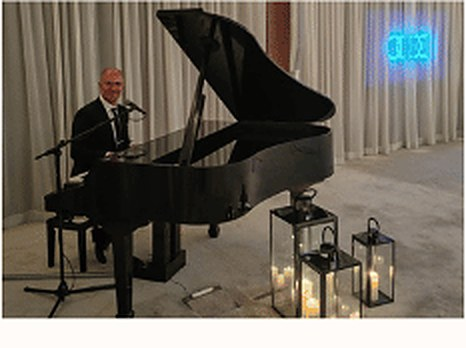
Bobby Jazz Trio
Grand piano jazz covering Tony Bennett, Frank Sinatra and Michael Bublé in a 360-degree set that's never quite the same twice. Built for an elegant, mellow room.
Enquire About Bobby Jazz TrioErrico Jazz Band
An Italian vocalist and composer with roots in classical study and a career that has carried him through Europe, Brazil and now Dubai. Blends jazz technique with samba warmth.
Enquire About Errico Jazz BandRudo Jazz Trio
An upright bass-led pop-jazz trio reinventing five decades of best-known hits, formed by a three-time SAMA Award-nominated arranger. Has shared stages with major international names.
Enquire About Rudo Jazz TrioRami Jazz Trio
An Egyptian pianist blending modern jazz with Middle Eastern and Mediterranean influence, built around rich, cinematic composition. Led by a Yamaha Artist with 25-plus international festival credits.
Enquire About Rami Jazz TrioThe Rebel Bass
A multicultural covers band spanning rock, pop, funk and indie, winner of Best Bar Band at the 2023 Dubai nightlife awards. Built for a set that keeps the crowd dancing from the first chord.
Enquire About The Rebel BassChloe Jazz Trio
A British soul and jazz vocalist raised on Natalie Cole, Stevie Wonder and Ella Fitzgerald, with residencies across Dubai's five-star hotel circuit. Brings a sultry, velvet-toned set to jazz bars and private events alike.
Enquire About Chloe Jazz TrioThe Jazz Project
A four-piece ensemble moving between classic jazz standards and contemporary jazz fusion. Built for a refined, elegant room that still wants some energy in the set.
Enquire About The Jazz ProjectMark Zitti
A brass-driven swing and jazz trio with a sharp, engaging sound and plenty of youthful energy. Built for a set that leans into classic swing with real bite.
Enquire About Mark Zitti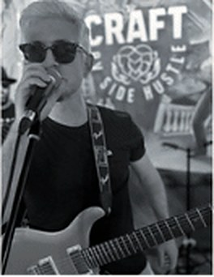
SSB (Saadiyat Studio Band)
A scalable lineup of the UAE's top session musicians, from an intimate trio to a seven-piece band, with members who've shared stages with major global artists. Moves comfortably between sophisticated jazz and high-energy funk and soul.
Enquire About SSB (Saadiyat Studio Band)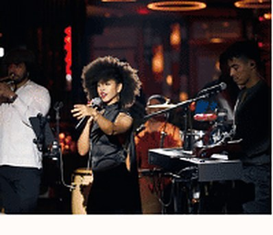
Cubache Band
A six-piece Cuban ensemble playing authentic salsa and Buena Vista-style music, built from musicians raised across different regions of Cuba. Time Out Dubai 'Best Bar Band' nominees.
Enquire About Cubache BandThe Tasty Biscuits
A six-piece band blending soulful melodies with funky grooves, with stages that have ranged from intimate Sofar Sounds shows to F1 after-race concerts. Built for a set with real groove behind it.
Enquire About The Tasty BiscuitsIVA
A Dubai-based soul, jazz, pop and dance act that has performed across the region's top five-star venues, from Atlantis to Burj Al Arab. A polished, high-profile act for a room that wants a proven performer.
Enquire About IVAMike & Mary Duo
A vocal duo and trio spanning 1940s and 50s classics through to modern dance hits, with stage credits on major TV talent shows. Built for romantic gatherings, brunches and larger celebrations alike.
Enquire About Mike & Mary DuoInstrumental
Solo and ensemble instrumentalists: strings, piano, saxophone and more, for ceremonies and ambient sets.
Arabic Musicians
Traditional and contemporary Arabic musicians and ensembles for cultural and regional celebrations.
Specialists Acts
Specialist performers built around a unique concept or theme, tailored to your event.
Circus Acts
Aerialists, contortionists, and circus performers for high impact visual entertainment.
Roaming Acts
Walkabout performers who move through your event, mingling with guests and creating moments.
Dancers
Choreographed dance troupes and solo performers across styles, from contemporary to cultural.
Shows
Full production shows built around a theme, choreography, and a clear narrative arc.
Acrobats
Acrobatic and gymnastic performers for stage shows or roaming entertainment.
Stationed Acts
Performers stationed at a fixed point: living statues, art installations, and interactive stations.
Fire & L.E.D Shows
High impact fire and LED performance acts for a striking visual finale.
Children's Entertainment
Entertainers, characters, and activities designed for younger guests.
Hostesses
Professional hostesses for guest management, registration, and brand representation.
MC / Host / Comedian
Hosts, MCs, and comedians to guide your event and keep the energy right.
Live Art
Live painters and artists who create a piece in real time as part of your event.
Photographers & Videographers
Event photography and videography, from documentary coverage to cinematic highlight reels.
Photo Booths
Photo booths and activations, from classic booths to 360 experiences.
Magicians & Illusionists
Close-up magic and stage illusion acts for an unforgettable wow moment.